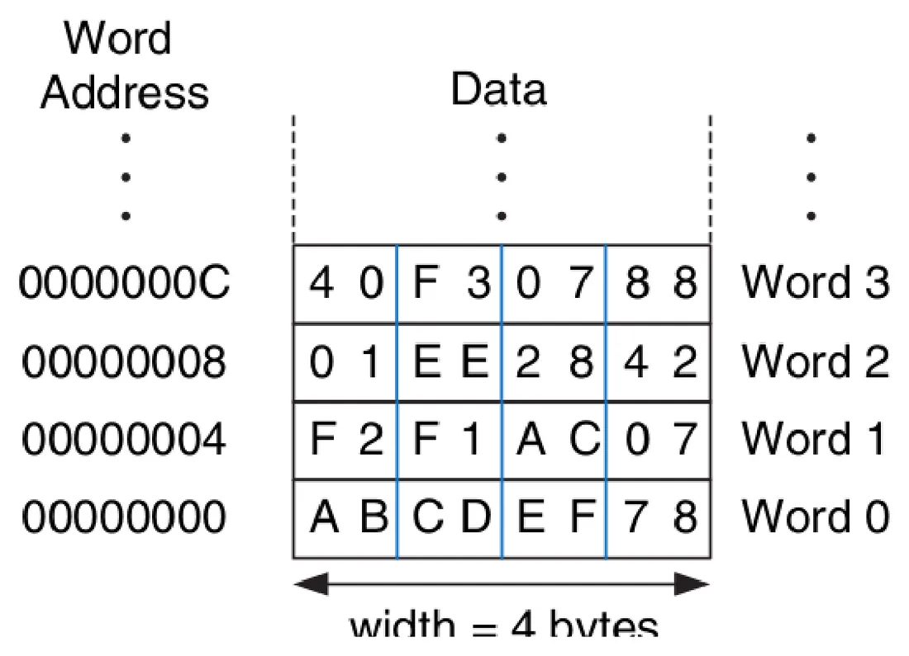
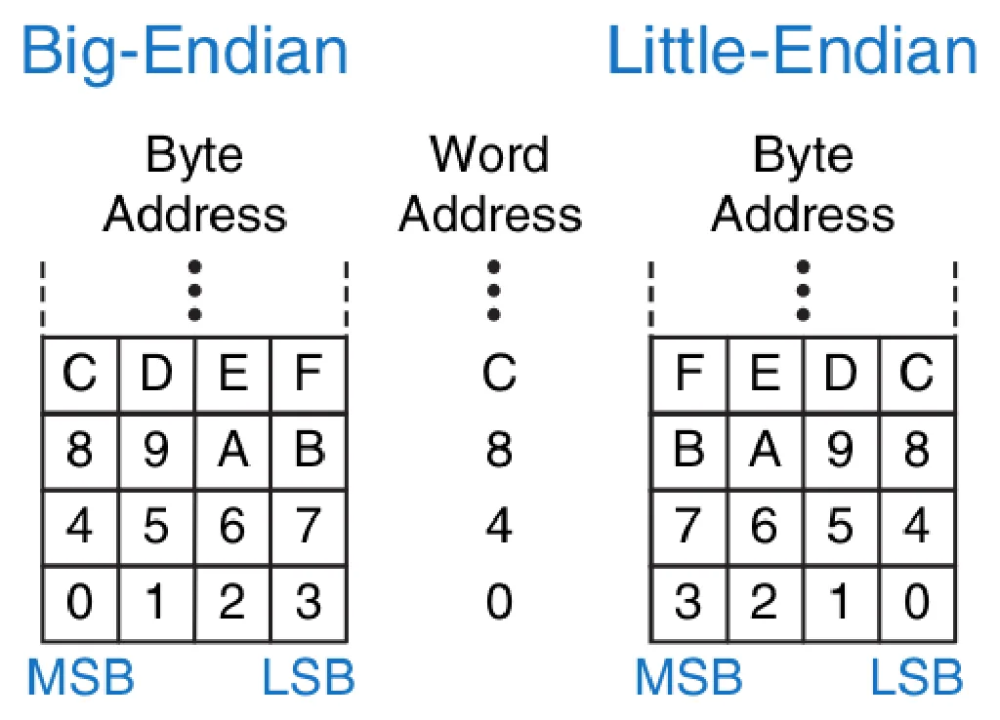
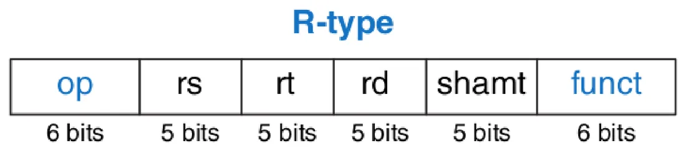
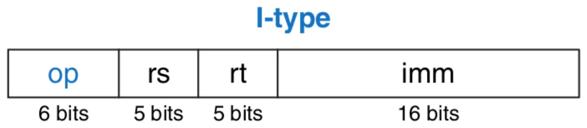
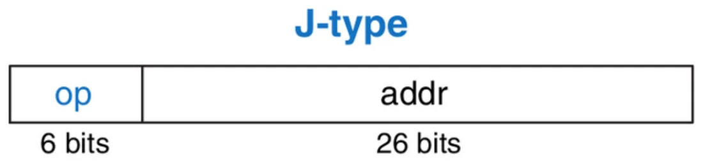
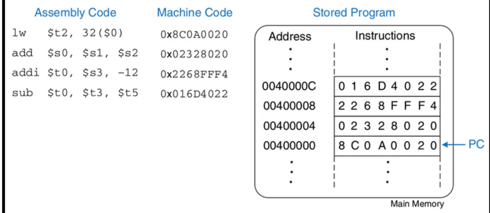
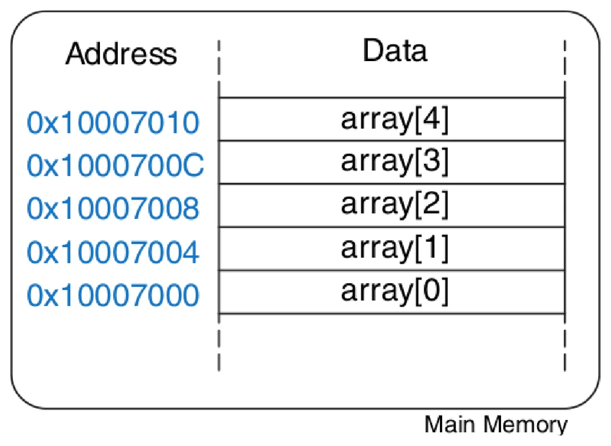
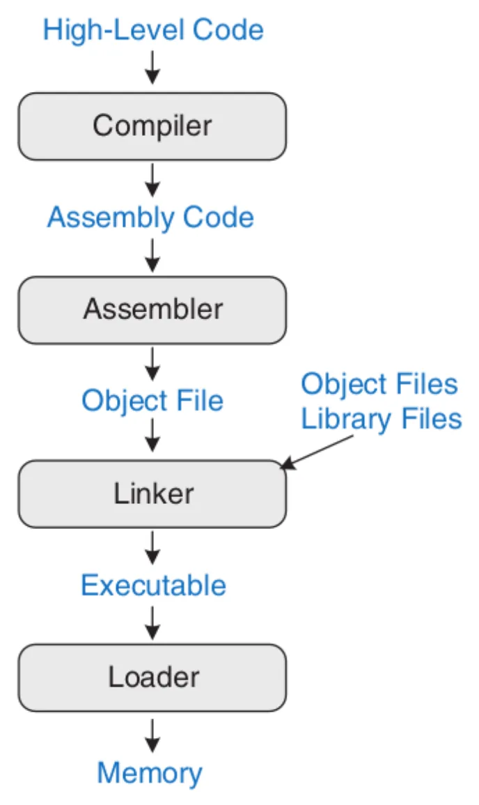
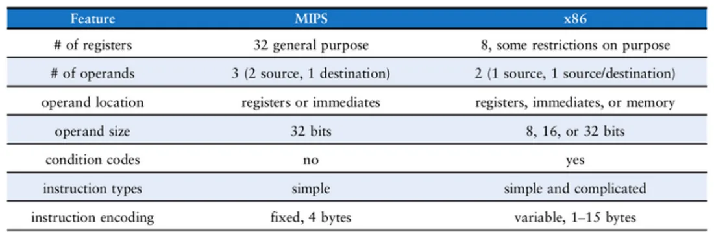

Język komputera
- Słowa w języku komputera to instrukcje, a jego słownik to zestaw instrukcji.
- Wszystkie programy uruchamiane na danym komputerze używają tego samego zestawu instrukcji.
- Instrukcje są zakodowane jako liczby binarne — to język maszynowy.
- Wygodniej zapisywać je symbolicznie — to asembler (assembly).
Jedna linijka kodu wysokiego poziomu i jej odpowiednik w MIPS:
add a, b, c # a = b + caddto mnemonik — mówi, jaką operację wykonać,bicto operandy źródłowe,ato operand docelowy (wynik).- Komentarz zaczyna się od
#i trwa do końca linii.
Bardziej złożone wyrażenie trzeba rozbić na kilka instrukcji: a = b + c − d to sub t, c, d i add a, b, t.
Po ludzku
Asembler to przepis rozpisany na najmniejsze możliwe kroki: „weź jajko”, „rozbij jajko”, „wlej do miski”. Żadnego „zrób omlet” — procesor zna tylko takie pojedyncze ruchy.
Rejestry
Instrukcje działają na rejestrach — szybkich komórkach wewnątrz procesora. MIPS ma ich 32 (Register File). Nazwy zaczynają się od $.
| Rejestry | Numery | Do czego |
|---|---|---|
$0 | 0 | zawsze zawiera zero |
$v0–$v1 | 2–3 | wartość zwracana przez funkcję |
$a0–$a3 | 4–7 | argumenty funkcji |
$t0–$t7 | 8–15 | tymczasowe (temporary) — pośrednie wyniki |
$s0–$s7 | 16–23 | zachowywane (saved) — zmienne programu |
$sp | 29 | wskaźnik stosu |
$ra | 31 | adres powrotu z funkcji |
✚ Numery rejestrów uzupełniłem z dokumentacji MIPS; na slajdach padają tylko niektóre ($t0 = 8, $s3 = 19, $s4 = 20, $s5 = 21) — są zgodne z tą tabelą.
Przykład z wykładu — dwie linijki C zamienione na cztery instrukcje:
a = b - c;
f = (g + h) - (i + j);# $s0 = a, $s1 = b, $s2 = c, $s3 = f, $s4 = g, $s5 = h, $s6 = i, $s7 = j
sub $s0, $s1, $s2 # a = b - c
add $t0, $s4, $s5 # $t0 = g + h
add $t1, $s6, $s7 # $t1 = i + j
sub $s3, $t0, $t1 # f = (g + h) - (i + j)Pamięć
Rejestrów jest tylko 32, więc większość danych leży w pamięci. Do przenoszenia danych służą dwie instrukcje:
lw(load word) — wczytaj słowo z pamięci do rejestru,sw(store word) — zapisz słowo z rejestru do pamięci.
Adres podaje się jako przesunięcie(rejestr bazowy): lw $s3, 8($t0) znaczy „weź słowo spod adresu $t0 + 8”.


- Pamięć MIPS jest adresowana bajtami: każdy bajt ma własny adres.
- Słowo ma 32 bity = 4 bajty, więc adresy kolejnych słów to wielokrotności 4: 0, 4, 8, 12…
Big-endian i little-endian


To dwa sposoby numerowania bajtów w słowie. W big-endian bajt numer 0 jest na „dużym” (najbardziej znaczącym) końcu; w little-endian — na „małym” (najmniej znaczącym).
Stałe (wartości natychmiastowe)
Stała zapisana wprost w instrukcji nazywa się natychmiastową (immediate) — nie trzeba po nią sięgać do rejestru ani pamięci. Służy do tego addi (dodaj stałą).
lw $s3, 4($0) # $s3 = memory word at address 4
sw $s7, 20($0) # memory word at address 20 = $s7
addi $s0, $s0, 4 # a = a + 4 (constant inside the instruction)
addi $s1, $s0, -12 # b = a - 12Język maszynowy: trzy formaty
Każda instrukcja MIPS ma dokładnie 32 bity. Są trzy formaty:
| Format | Pola (liczba bitów) | Do czego |
|---|---|---|
| R (register) | op (6) · rs (5) · rt (5) · rd (5) · shamt (5) · funct (6) | działania na trzech rejestrach |
| I (immediate) | op (6) · rs (5) · rt (5) · imm (16) | dwa rejestry i 16-bitowa stała |
| J (jump) | op (6) · addr (26) | skoki |
Typ R


rs,rt— rejestry źródłowe,rd— rejestr docelowy,- wszystkie instrukcje typu R mają op = 0; o tym, jaka to operacja, decyduje pole funct,
shamt— o ile bitów przesunąć (tylko w instrukcjach przesuwania).
Przykład z wykładu: add $t0, $s4, $s5
W asemblerze najpierw jest rejestr docelowy; w kodzie maszynowym kolejność pól jest inna: rs, rt, rd.
| Pole | op | rs ($s4) | rt ($s5) | rd ($t0) | shamt | funct (add) |
|---|---|---|---|---|---|---|
| Dziesiętnie | 0 | 20 | 21 | 8 | 0 | 32 |
| Binarnie | 000000 | 10100 | 10101 | 01000 | 00000 | 100000 |
Razem: 0000 0010 1001 0101 0100 0000 0010 0000 = 0x02954020. Najłatwiej zapisać najpierw binarnie, a potem grupować po 4 bity na cyfry szesnastkowe.
Typ I


Przykład z wykładu: lw $s3, −24($s4)
| Pole | op (lw) | rs ($s4) | rt ($s3) | imm |
|---|---|---|---|---|
| Dziesiętnie | 35 | 20 | 19 | −24 |
| Binarnie | 100011 | 10100 | 10011 | 1111 1111 1110 1000 |
Razem: 0x8E93FFE8. Liczba −24 jest zapisana w kodzie U2 na 16 bitach (wykład 8).
Typ J


Używany tylko w skokach: 6 bitów kodu operacji i 26 bitów adresu.
W drugą stronę: z kodu maszynowego na asembler
Pierwsze 6 bitów to opcode — on mówi, jak czytać resztę.
Przykład z wykładu
0x2237FFF1 = 001000 10001 10111 1111111111110001 → op = 8 (addi), rs = 17 ($s1), rt = 23 ($s7), imm = −15 → addi $s7, $s1, -15
0x02F34022 = 000000 10111 10011 01000 00000 100010 → op = 0 (typ R), rs = 23 ($s7), rt = 19 ($s3), rd = 8 ($t0), funct = 34 (sub) → sub $t0, $s7, $s3
Program w pamięci


Program w języku maszynowym to po prostu ciąg liczb binarnych przechowywany w pamięci — tak samo jak dane. Licznik rozkazów PC wskazuje instrukcję, która jest właśnie wykonywana.
Instrukcje logiczne i przesunięcia
- Logiczne:
and,or,xor,nor— działają bit po bicie na dwóch rejestrach. Wersje ze stałą:andi,ori. - Przesunięcia:
sll(logiczne w lewo),srl(logiczne w prawo),sra(arytmetyczne w prawo). - Przesunięcie o n bitów to mnożenie lub dzielenie przez 2n:
sll $t0, $t0, 3mnoży przez 8.
Skoki i rozgałęzienia
Siła komputera polega na tym, że potrafi podejmować decyzje.
| Instrukcja | Znaczenie |
|---|---|
beq rs, rt, etykieta | skocz, jeśli rejestry są równe |
bne rs, rt, etykieta | skocz, jeśli są różne |
j etykieta | skocz bezwarunkowo |
jal etykieta | skocz i zapamiętaj adres powrotu (wywołanie funkcji) |
jr $ra | skocz pod adres z rejestru (powrót z funkcji) |
Etykieta to nazwa miejsca w programie; kończy się dwukropkiem.
addi $s0, $0, 4 # $s0 = 0 + 4 = 4
addi $s1, $0, 1 # $s1 = 0 + 1 = 1
sll $s1, $s1, 2 # $s1 = 1 << 2 = 4
beq $s0, $s1, target # $s0 == $s1, so branch is taken
addi $s1, $s1, 1 # not executed
sub $s1, $s1, $s0 # not executed
add $s1, $s1, $s0 # $s1 = 4 + 4 = 8if / else
# if (i == j) f = g + h; else f = f - i;
# $s0 = f, $s1 = g, $s2 = h, $s3 = i, $s4 = j
bne $s3, $s4, else # if i != j, branch to else
add $s0, $s1, $s2 # if block: f = g + h
j L2 # skip past the else block
sub $s0, $s0, $s3 # else block: f = f - i
Zwróć uwagę: w asemblerze sprawdza się warunek odwrotny (bne — „jeśli różne, przeskocz do else”).
Pętla while
# int pow = 1; int x = 0;
# while (pow != 128) { pow = pow * 2; x = x + 1; }
# $s0 = pow, $s1 = x
addi $s0, $0, 1 # pow = 1
addi $s1, $0, 0 # x = 0
addi $t0, $0, 128 # $t0 = 128 for comparison
beq $s0, $t0, done # if pow == 128, exit the loop
sll $s0, $s0, 1 # pow = pow * 2
addi $s1, $s1, 1 # x = x + 1
j while
Pętla for
# int sum = 0;
# for (i = 0; i != 10; i = i + 1) sum = sum + i;
# $s0 = i, $s1 = sum
add $s1, $0, $0 # sum = 0
addi $s0, $0, 0 # i = 0
addi $t0, $0, 10 # $t0 = 10
beq $s0, $t0, done # if i == 10, branch to done
add $s1, $s1, $s0 # sum = sum + i
addi $s0, $s0, 1 # increment i
j for
Każda pętla ma ten sam szkielet: etykieta → sprawdzenie warunku wyjścia (beq … done) → ciało pętli → j z powrotem do etykiety.
Tablice


Tablica to kolejne komórki pamięci. Adres bazowy to adres elementu array[0]. Każdy element (słowo) zajmuje 4 bajty, więc array[1] leży 4 bajty dalej, array[2] — 8 bajtów dalej itd.
# int array[5];
# array[0] = array[0] * 8; array[1] = array[1] * 8;
# $s0 = base address of array
lui $s0, 0x1000 # $s0 = 0x10000000
ori $s0, $s0, 0x7000 # $s0 = 0x10007000
lw $t1, 0($s0) # $t1 = array[0]
sll $t1, $t1, 3 # $t1 = $t1 << 3 = $t1 * 8
sw $t1, 0($s0) # array[0] = $t1
lw $t1, 4($s0) # $t1 = array[1]
sll $t1, $t1, 3 # $t1 = $t1 * 8
sw $t1, 4($s0) # array[1] = $t132-bitowy adres nie mieści się w jednej instrukcji, więc ładuje się go w dwóch krokach: lui wpisuje górne 16 bitów, ori — dolne.
Funkcje i stos
Funkcje pozwalają wielokrotnie używać tego samego kodu. Umowa w MIPS:
- argumenty przekazuje się w rejestrach
$a0–$a3, - wynik wraca w rejestrze
$v0, jalskacze do funkcji i zapisuje adres powrotu w$ra;jr $rawraca.
# y = diffofsums(2, 3, 4, 5);
# int diffofsums(int f, int g, int h, int i) { return (f + g) - (h + i); }
addi $a0, $0, 2 # argument 0 = 2
addi $a1, $0, 3 # argument 1 = 3
addi $a2, $0, 4 # argument 2 = 4
addi $a3, $0, 5 # argument 3 = 5
jal diffofsums # call function ($ra = return address)
add $s0, $v0, $0 # y = returned value
add $t0, $a0, $a1 # $t0 = f + g
add $t1, $a2, $a3 # $t1 = h + i
sub $s0, $t0, $t1 # result = (f + g) - (h + i)
add $v0, $s0, $0 # put return value in $v0
jr $ra # return to callerStos to obszar pamięci na zmienne lokalne funkcji (i dodatkowe argumenty). Działa na zasadzie LIFO — ostatni odłożony element jest zdejmowany jako pierwszy. Wskaźnik stosu $sp pokazuje wierzchołek; stos zaczyna się pod wysokim adresem i rośnie w dół.
Po ludzku
Stos to stos talerzy: kładziesz na wierzch i zdejmujesz z wierzchu. Funkcja odkłada na niego to, co musi zachować, a przed powrotem zdejmuje — w odwrotnej kolejności.
Pozostałe tematy
- Liczby zmiennoprzecinkowe: MIPS ma 32 osobne rejestry
$f0–$f31i obsługuje standard IEEE (pojedyncza i podwójna precyzja). - Tryby adresowania — jest ich pięć:
| Tryb | Gdzie są operandy | Przykład |
|---|---|---|
| register-only | wszystko w rejestrach | instrukcje typu R |
| immediate | rejestry + 16-bitowa stała | addi |
| base | adres = rejestr bazowy + przesunięcie | lw, sw |
| PC-relative | adres względem licznika rozkazów | beq, bne |
| pseudo-direct | adres podany (prawie) wprost w instrukcji | j, jal |
Od kodu źródłowego do działającego programu


Krok po kroku
- Kompilacja — kompilator tłumaczy kod wysokiego poziomu na asembler.
- Asemblacja — asembler zamienia kod na plik obiektowy z językiem maszynowym; przydziela adresy instrukcjom i etykietom.
- Linkowanie — linker łączy pliki obiektowe (także z bibliotek) w jeden plik wykonywalny.
- Ładowanie — system operacyjny wczytuje plik wykonywalny z dysku do pamięci i uruchamia program.
MIPS a x86


| Cecha | MIPS (RISC) | x86 (CISC) |
|---|---|---|
| Rejestry | 32 ogólnego przeznaczenia | 8, część z ograniczeniami |
| Operandy | 3 (2 źródła, 1 cel) | 2 (jeden jest zarazem źródłem i celem) |
| Gdzie mogą być operandy | rejestry lub stałe | rejestry, stałe lub pamięć |
| Rozmiar operandów | 32 bity | 8, 16 lub 32 bity |
| Znaczniki warunków (flagi) | nie | tak (rejestr EFLAGS) |
| Instrukcje | proste | proste i złożone |
| Kodowanie | stałe, 4 bajty | zmienne, 1–15 bajtów |
Prawie wszystkie komputery osobiste używają procesorów o architekturze x86 — przykład CISC.